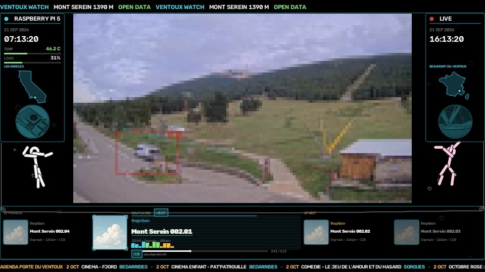
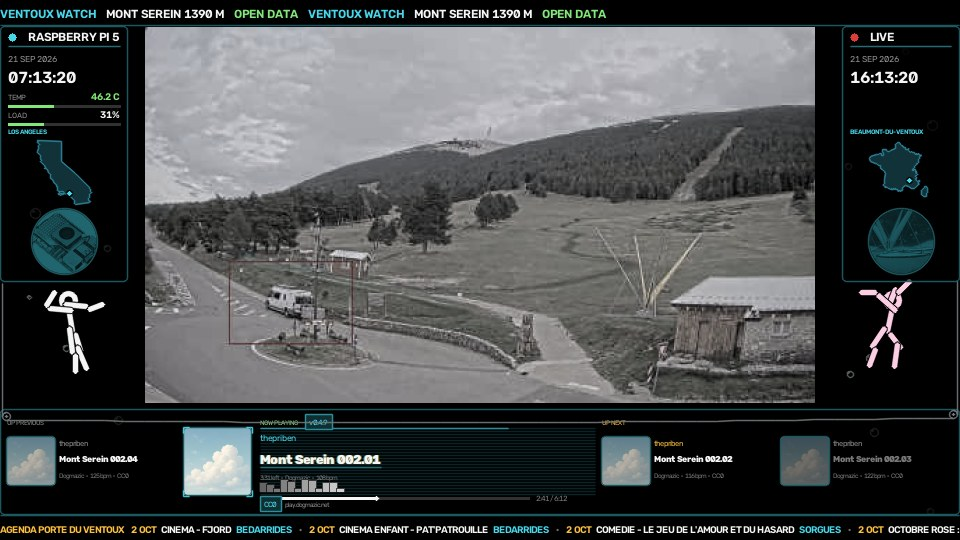
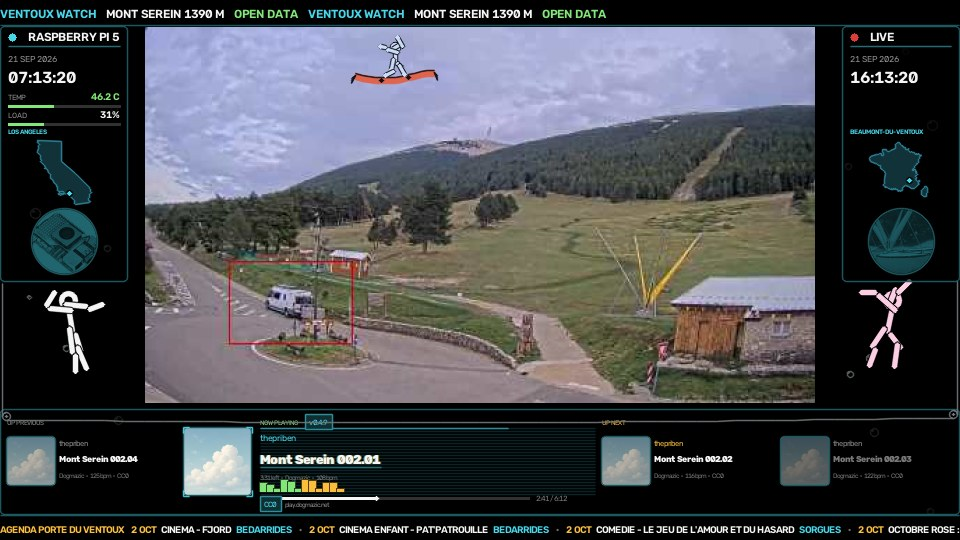
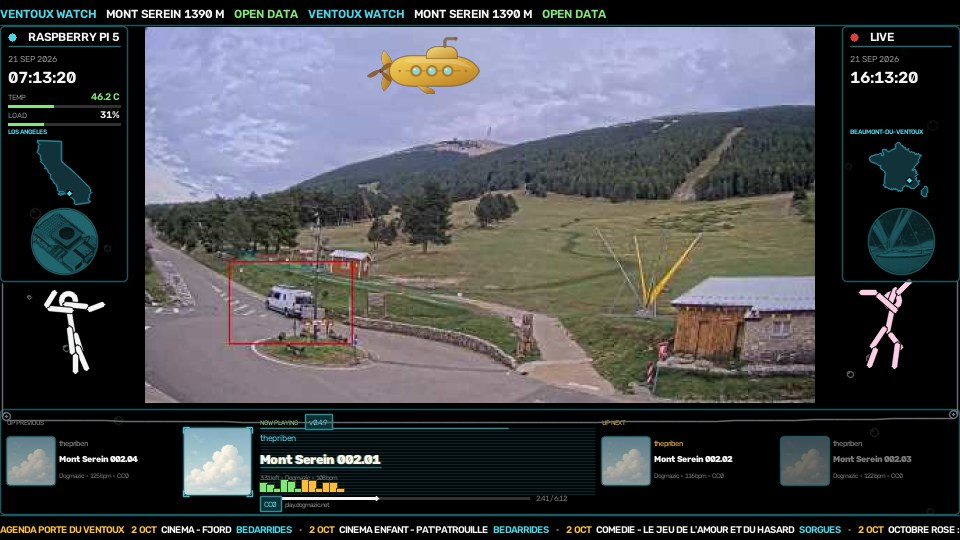
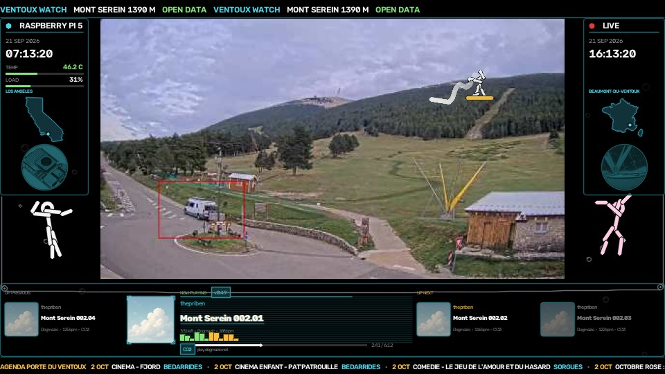
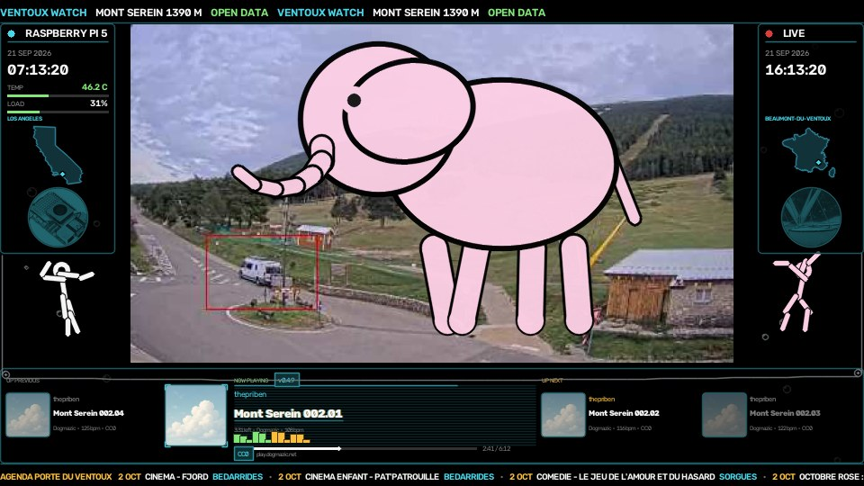
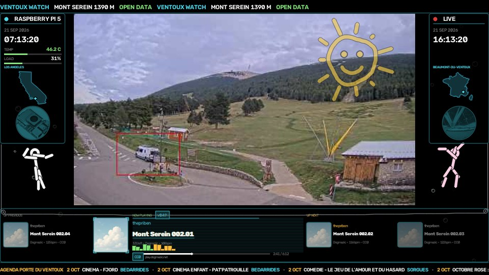
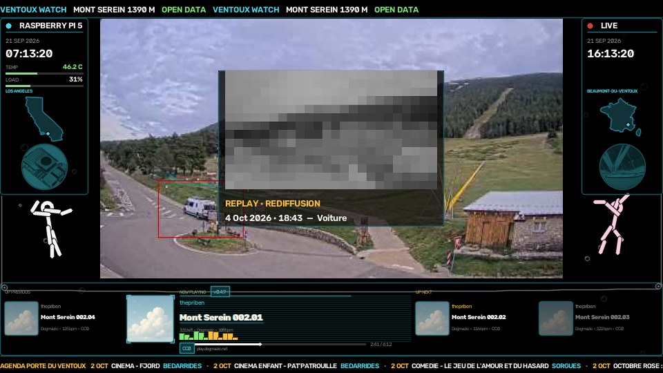
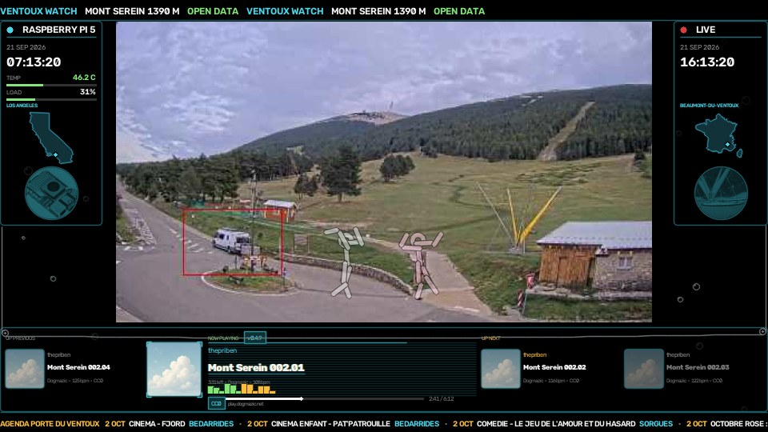

Live webcam
LIVE RASPBERRY PI 5
On the stream
Sixteen picture modes take turns on the same frame. The mountain stays the source; each row is a way the Pi redraws it.
| Name | What happens | |
|---|---|---|
 | Pixel | The mountain is rebuilt from large squares, then returns. |
 | Grey | Colour drains from the slope and comes back. |
| Wave | Horizontal bands slide, as if the picture were under water. | |
 | Catch | A catch is a name the watch trusts while the thing is still in the picture: a car, a walker, a bike, a bus, a truck, a plane. The stream sits a few seconds behind the watch, so the celebration waits until that subject is on screen and the rectangle is drawn around it. GOOD CATCH! then crosses the mountain in green for a second and a half. A white flash dies in half a second. The name sits under the words, because the cheer alone does not say what was taken. At the same time the letterbox around the camera window lights in the colour of that kind of passage, for three and a half seconds, and the name is written large under the picture, over the cable and the top of the music console. Pixel, grey and wave hold off for those seconds, so the thing that passed stays a thing you can look at. The mountain itself stays the photograph. |
 | Console | The music console, the LIVE and Raspberry Pi 5 badges, and the cable that ties Los Angeles to Beaumont-du-Ventoux. |
 | Bear | A wooden bear stands beside the path between the roundabout and the sheepfold. The scene map measures him at 1.73 m tall and 0.64 m wide, twenty-five metres from the lens. He has watched the cars go by for years. Every two hours and a quarter, in daylight, a cutout taken from him at noon walks down to the island of the roundabout, dances there for ten seconds, weeps, and shouts THIS IS MY HOME!!!!! The sculpture stays where it is, so both are in the picture together. His size on the island follows the distance: a metre there is forty-three pixels, against forty-seven where he stands. While he dances, a photograph of the real sculpture appears in the black band. At night the cutout stays off. A noon photograph on a dark slope would read as a sticker. |
 | Carpet | A flying carpet follows the crest from one side of the sky to the other. |
 | Submarine | A yellow submarine crosses the sky above the summit. |
 | Piste | A surfer descends the André Philip run, the piste lighting up behind him. |
 | Elephant | A pink elephant fills the frame for a few quiet night hours. |
| Building | A wireframe building rises from OpenStreetMap, then fades. | |
 | Sun | A child’s sun is drawn where the real one sits behind the cloud. |
 | Machine | Thanks Raspberry! The Pi 5 on the desk that runs the watch. |
 | Dogmazic | Thanks Dogmazic! The free-music library that fills the day. |
 | Replay | A named passage comes back as a dated replay. |
 | Meeting | The two dancers leave their corners and meet in the middle of the camera window. |
3D view
Camera
Fixed, facing 140°.